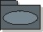

| Артефакт: Пакет вариантов использования |
|  |
|
| Артефакт-контейнер | ||
|---|---|---|
| Роли | Ответственный: | Изменен: |
| Задачи | Вход для: | Выход из: |
| Опции представления | Представление UML: Пакет в модели вариантов использования, либо пакет верхнего уровня, либо имеющий стереотип
<<use-case package>> .
+ Предоставляет иерархическую структуру модели с отдельными функциональными блоками. Такая структура легче для понимания, чем плоская структура модели (без пакетов), в том случае, если модель вариантов использования и система являются относительно большими. + Обеспечивает хорошую возможность для распределения работ и ответственностей между несколькими разработчиками в соответствии с областью их компетентности. Это особенно важно при построении большой системы. Пакеты вариантов использования также обеспечивают основу для защиты, если требуется обеспечить конфиденциальность среди разработчиков, так чтобы только несколько сотрудников были осведомлены о полной функциональности системы. + Поскольку пакеты вариантов использования должны являться блоками высокой связности, изменение одного пакета не повлияет на другие пакеты. - Обслуживание пакетов вариантов использования увеличивает нагрузку на группу моделирования вариантов использования. - Применение пакетов вариантов использования означает, что существует еще одна нотационная концепция, которую должны изучить разработчики. Если вы используете эту методику, то следует принять решение о требуемом количестве уровней пакетов. Практическое правило: каждый пакет вариантов использования должен содержать примерно от 3 до 10 блоков меньшего размера (вариантов использования, субъектов или других пакетов). В приведенной ниже таблице даются некоторые рекомендации о том, сколько пакетов следует использовать при данном числе вариантов использования и субъектов. Величины накладываются, поскольку невозможно представить точные рекомендации.
|
|---|
| Рекомендации |
|---|
© Copyright IBM Corp. 1987, 2006. Все права защищены.. |